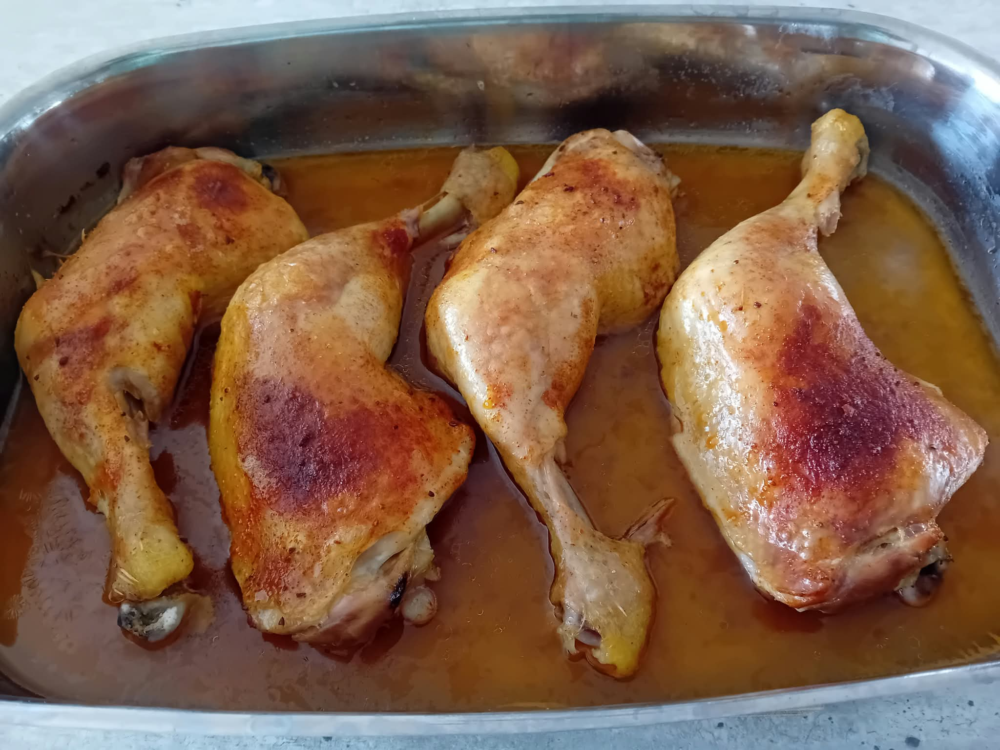
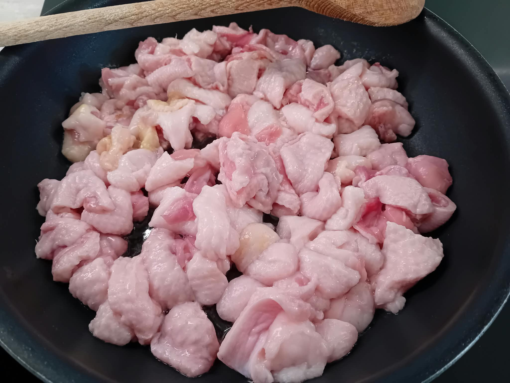
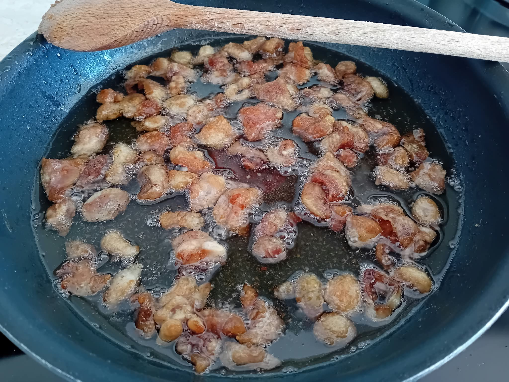
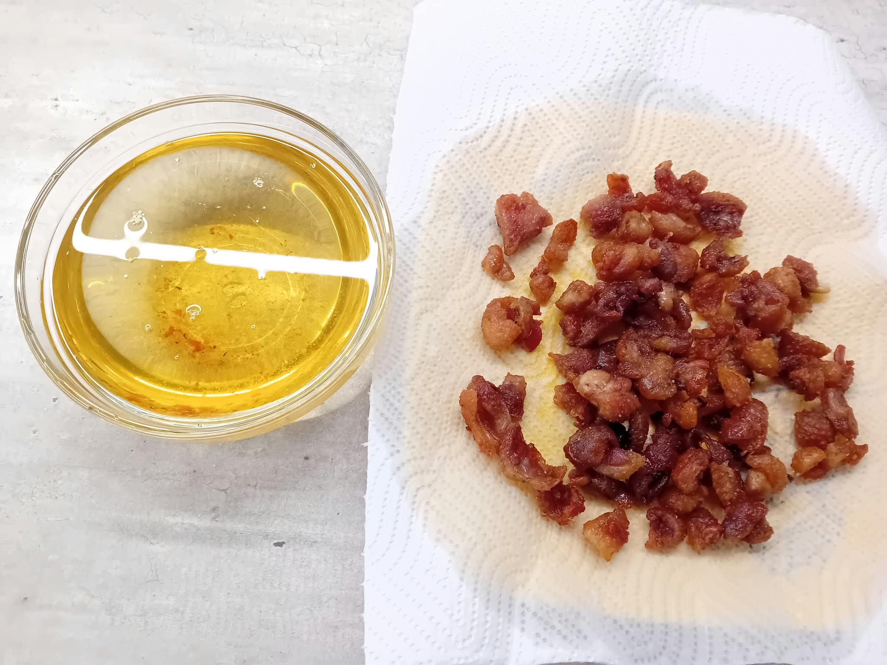
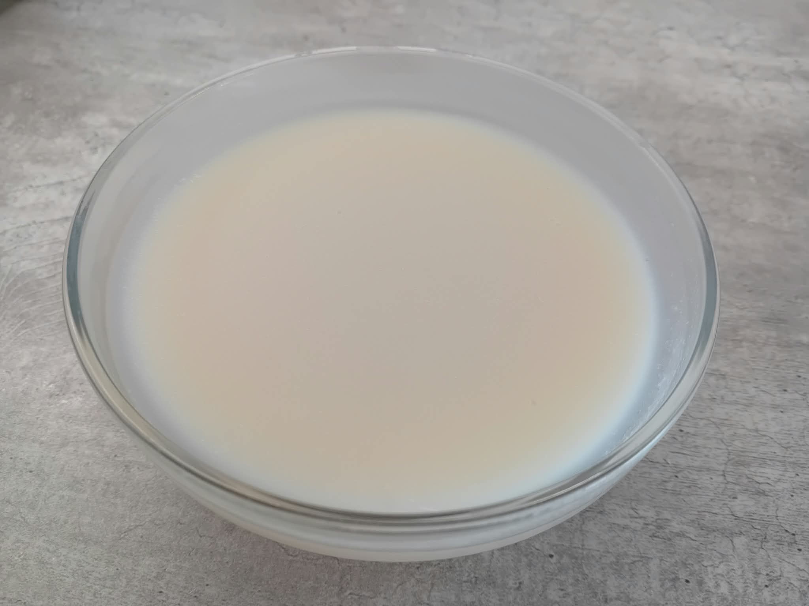

Kuře
Kuře je skvělá surovina - levná, chutná, zdravá a všestranná. Abychom ho ale využili naplno, musíme vybírat kuřata kvalitní a vědět, jak je beze zbytku zpracovat.
Kde ho pořídit
Výběr kuřete je zcela zásadní. Kvalitní farmářské kuře z volného výběhu na trávě je sice o mnoho dražší než základní kuře ze supermarketu, jedná se ale o zcela jiný druh masa - nesrovnatelně čerstvější, pevnější, chutnější a zdravější. Není nic odpornějšího než vodnaté kuře ležící v igelitu plném lepkavé tekutiny, které po rozbalení zapáchá. Čerstvé kuře nemá naprosto žádný zápach! Nehledě na to, že kuřata od drobných farmářů mají daleko příjemnější život než jejich příbuzní z velkochovů a jejich produkce je pro naše životní prostředí i lokální ekonomiku příznivější.
Faktem zůstává, že kvalitní kuřata jsou na první pohled dost drahá. Pokud ale víte, jak je chytře a beze zbytku zpracovat, zjistíte, že i tak je jejich cena v přepočtu na porci jídla velmi příznivá.
Celé nebo naporcované
Existuje známé pravidlo - kuře kupujte vždy celé, nikdy už naporcované kousky, jako jsou samostatná prsa, stehna nebo křidýlka. Vyjde vás to totiž levněji a ještě vám po rozbourání zbyde kostra a kůže, které jsou v kuchyni taky velmi užitečné.
Podle mých výpočtů to beze sporu platí pro levná supermarketová kuřata (která ale stejně nekupujeme). Pro kvalitní, dražší kuřata (z drůbežího pultu v obchodě Globus, farmářská z webu rohlik.cz nebo z farmářských trhů) to pravda není, viz tabulka - zřejmě si prodejci lépe cení všech jejich částí.
| Globus (Klasické kuře) |
Globus (Selské kuře) |
Rohlik.cz (Farma Němcovi) |
||
|---|---|---|---|---|
| Podíl hmotnosti | Cena Kč za Kg | Cena Kč za Kg | Cena Kč za Kg | |
| Celé | 100% | 90 | 139 | 205 |
| Stehna | 35% | 130 | 149 | 235 |
| Prsa | 25% | 223 | 249 | 355 |
| Křídla | 10% | 113 | 109 | 155 |
| Kostra | 25% | --- | 19 | --- |
| Kůže | 5% | --- | --- | --- |
| Úspora: | 25,06% | -6,44% | -9,02% | |
Já i tak kupuju kuřata celá, jednoduše si je po příchodu domů naporcuju a jednotlivé části buď rovnou použiju, nebo si je předpřipravám do lednice nebo na mrazák. Syrové maso se rychle kazí a když už jsem si dal tu námahu a obstaral kvalitní, čerstvá a drahá kuřata, dávám do lednice jen ty části, které chci vařit do druhého dne. A i tak je rovnou nasolím nebo naložím do (olejové) marinády, čímž maso trochu zakonzervuju a zároveň mu dám čas sůl a koření pořádně vstřebat.
Bourání kuřete
Návodů, jak rozbourat kuře, je na internetu spousta - nebodu to zde zbytečně popisovat. Po rozbourání vám zbydou tyto části:
- stehna,
- prsa (s kůží nebo bez),
- křidýlka,
- kostra,
- kůže.
Ve zbývající části článku si vysvětlíme, co vše se dá z jednotlivých kusů připravit. Ještě ale pár všeobecných doporučení.
Co s kůží? Kostru a jakékoliv zbytky a odřezky používám na vývar. Kůži ale odřežu a nechám stranou, tedy její většinu. Zejména kolem krku a vzadu u ocasu, kde navíc bývají i velké kusy zásobního tuku. Stejně tak z prsou (pokud do receptu nepotřebuju prsa i s kůží). Pokud bych totiž veškerou kůži použil na vývar, bude zbytečně tučný. Na kostře (na hřbetě kuřete) jí zbyde i po odřezání tak akorát. Z odřezků se dají vyškvařit skvělé škvarečky a kvalitní sádlo. Pokud z nějakého důvodu přece jen vařím vývar i s velkým množstvím kůže, můžu po vychlazení v lednici přebytečný tuk posbírat opatrně lžicí - usadí se totiž na hladině. Většinou ale sebrané sádlo není tak čisté - má menší trvanlivost a větší obsah vody (při použití trochu prská). Navíc takto přijdu o škvarečky.
Někteří kuchaři odkrajují poslední část křidýlek, protože v nich není téměř žádné maso. Já peču křidýlka zásadně celá - poslední část je křupavá a minimálně kůže na ní je jedlá a vynikající.
Stehna
Kuřecí stehna jsou tmavé, tučné maso s kostí a skvěle se hodí na pečení. Spousta z nás má ve zvyku péct kuře v celku - dle mého názoru je to škoda. Prsa se vysuší a křidélka nevypečou dostatečně do křupava. Výhodnější je kuře naporcovat a každou část použít na úpravu, ke které je nejvhodnější. Proto peču samotná stehna.

Kosti a jakékoliv zbytky masa, které po dojedeném kuřeti zbydou, nevyhazujte - skvěle se hodí na vývar, viz sekce Kostra.
Když už budete stehna péct, nebojte se jich připravit víc, než sníte. Zbylé maso oberte a použijte spolu s výpekem jako základ dalších receptů, například:
- polévek,
- rizota,
- kroupových misek,
- chicken chilli.
Maso se nejsnáze obírá ještě za tepla. Jakmile vychladne, ztuhne a obtížněji se odděluje libové maso od kosti, tuku, a podobně.
Vypečená kůže během krátké doby nasaje vzdušnou vlhkost a ztratí křupavost, proto ji buď snězte všechnu rovnou, nebo ji kdykoliv později rozložte rovnoměrně na pánev a znovu krátce vyškvařte.
V žádném případě nevyhazujte zbylý výpek! Je v něm koncentrované obrovské množství chuti. Ideálně ho ještě za tepla slijte (a seškrábejte) do malé skleničky nebo misky. Pokud stihne vychladnout a přischnout k pekáči, kápněte do něj trochu vody a přiveďte na sporáku k varu. Vařečkou nebo lžicí seškrábejte výpek ode dna - díky vařící se vodě to půjde snadno. Přebytečnou vodu vyvařte a rozpuštěný výpek slijte. Použijete ho (samostatně nebo spolu se zbytky masa) jako základ spousty dalších pokrmů, viz výše. Můžete ho taky, podobně jako vývar, použít místo vody, kdykoliv vaříte rýži, kroupy, a podobně, ve výsledné chuti je velký rozdíl.
Kromě pečení se stehna skvěle hodí jako steak, zejména jejich horní část (spodní je více šlachovitá). Oproti prsům jsou štavnatější. Stehna rozkrojíme v oblasti kloubu a vykostíme - buď obě části, nebo jen horní, a spodní můžeme ponechat s kostí a upéct. Kosti a odřezky schovejte na vývar, viz sekce Kostra. Dejte si pozor, aby byl výsledný plátek masa všude stejně silný, jinak se bude nerovnoměrně opékat. Na steak rozhodně potřebujeme maso i s kůží. Na pánvi nejprve opékáme ze strany s kůží (nasucho, kůže pustí tuku dost), a to tak dlouho, než se vypeče tuk a kůže je krásně křupavá. Pak otočíme a z druhé strany opékáme už jen krátce - zatímco se škvaří kůže, maso se stihne v podstatě celé prohřát a uvařit.
Vykostěný steak nemusíme použít hned. Když se zamrazí tak, aby zůstal v podobě rovného a tenkého plátku, dá se kdykoliv vložit z mrazáku přímo na rozpálenou pánev. Tenký plátek masa totiž na pánvi roztaje a propeče se dřív, než se stihne vysušit. Není ho proto potřeba předem rozmrazovat. Neexistuje asi rychleji připravený oběd nebo večeře, nez během deseti minut opečený steak s hromadou zeleniny krátce orestované ve výpeku (růžičky brokolice, fazolové lusky, a podobně). Ideální ve chvíli, kdy se s rodinou vracíte nečekaně pozdě domů a nemáte k jídlu nic připravené.
Steaky můžete před vložením do mrazáku nasolit nebo nakořenit, budou mít čas se hezky namarinovat. Kuřecí steaky ale úplně stačí posolit až na pánvi nebo po dopečení, zatímco odpočívají.
Prsa
Kuřecí prsa jsou běžná surovina a všichni je asi dobře známe. Můžeme je použít na steak (pokud je upravíme například na styl motýlka - aby byl plátek všude stejně silný), na nudličky s jakoukoliv marinádou a vařeným bramborem nebo domácími hranolkami, nebo na kostky. Hodí se do spousty receptů z celého světa, například z indické kuchyně.
V neposlední řadě je lze nakrájet na řízky a osmažit v trojobale. Ideálně s bramborovým salátem nebo kaší. Pokud se usmaží zprudka a krátce, zůstanou pěkně šťavnatá.
Křidýlka
Kuřecí křidýlka mám nejradši pečená, a to pěkně do křupava. Jak na to jsem popsal v samostatném článku. Ideální velikost porce jsou tři křídla na osobu - proto vždy, když bourám kuře, schovám křidla do mrazáku a peču je, až když shromáždím dostatečný počet.
Kostra
TODO
Kůže
Kuřecí kůže obsahuje obrovské množství tuku a skvěle se hodí na výrobu sádla. Živočišný tuk se v kuchyni vždy hodí a ještě přitom získáte křupavé škvarečky.




Postup je stejný, jako při výrobě vepřového sádla. Jak už jsem zmiňoval v úvodu článku, při bourání kuřete vždy z kostry ořežu většinu kůže. Nakrájím ji na drobné kousky a na pánvi (nebo v hrnci) nasucho pomalu vypékám, při velmi nízké teplotě. Bude to trvat dost dlouho, klidně hodinu. Nechám kůži v klidu škvařit, jen ji občas lehce promíchám a jednotlivé kousky pootáčím, aby se smažily ze všech stran rovnoměrně a nepřipálily se. Postupně se vyškvaří sádlo, až nakonec vzniknou křupavé škvarky. Ty vyberu a rozložím na talíř pokrytý papírovou utěrkou (která nasaje přebytečné sádlo). Lehce osolím a co nejdříve sním. Škvarky budou postupně nasávat vzdušnou vlhkost a přestanou být křupavé - pokud bych je jedl o hodně později, můžu je v rychlosti znova na pánvi vypéct. Sádlo sliju do malé misky a po vychladnutí uchovávám v lednici, kde vydrží týdny.
Důležité je mít pánev (hrnec) s dostatečně širokým dnem, aby se kůže škvařila v jedné vrstvě a tudíž rovnoměrně.
Sádlo, které zbyde po slití na pánvičce, použiju ten samý nebo následující den na vaření. Je škoda ho omývat - do dalšího dne se nezkazí.